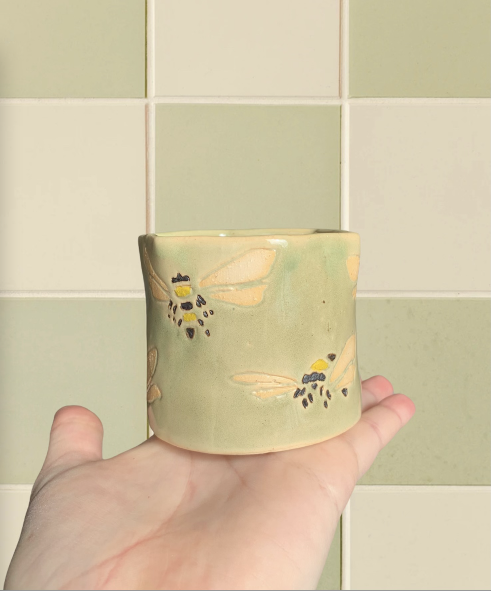
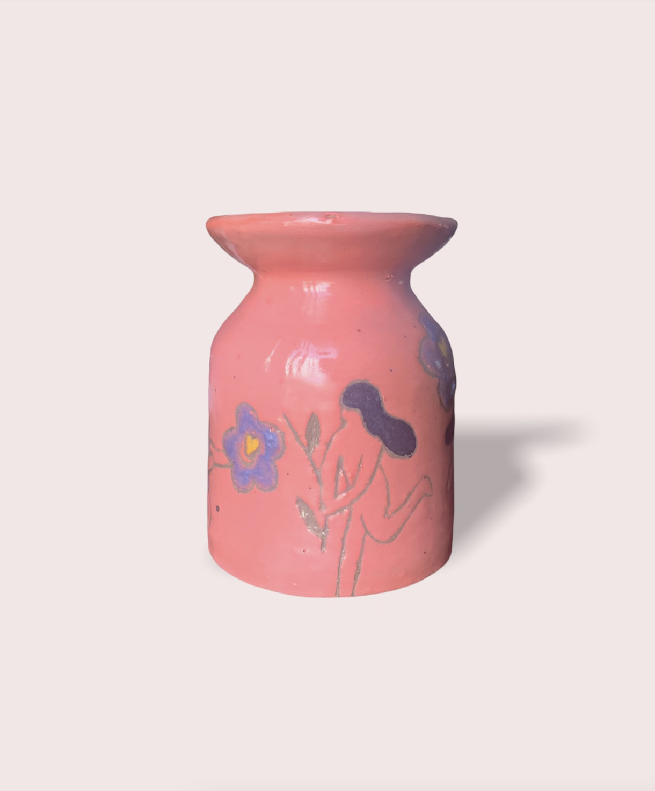
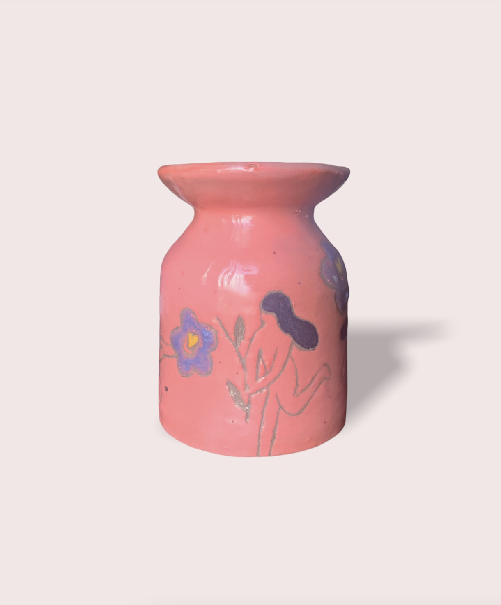
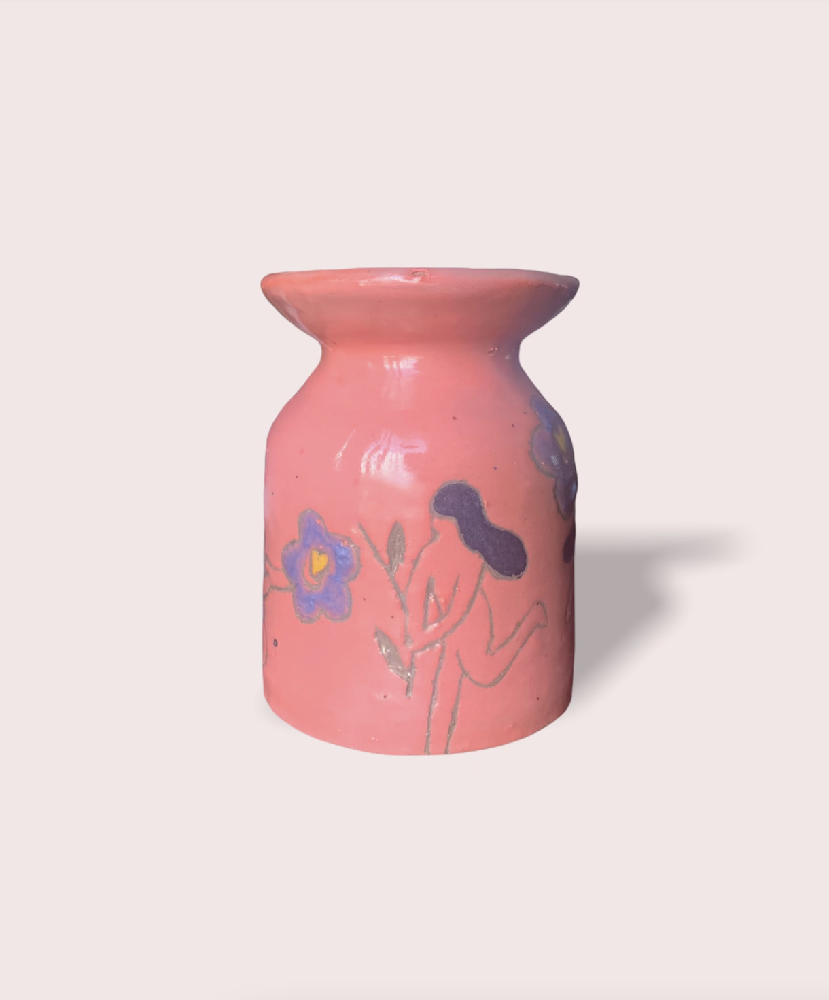

Ceramics
I first began ceramics in August 2021. It has since become my primary creative outlet and procrastination strategy.

 




2D Art
I love exploring aspects of humanity and people through my art. A common theme throughout my pieces is the exploration of the human form and how our interpretations change with different artistic elements. Most of the work featured is from 2012-2018.